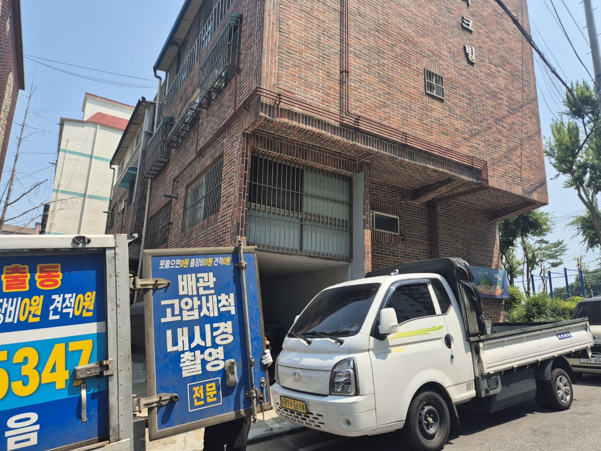
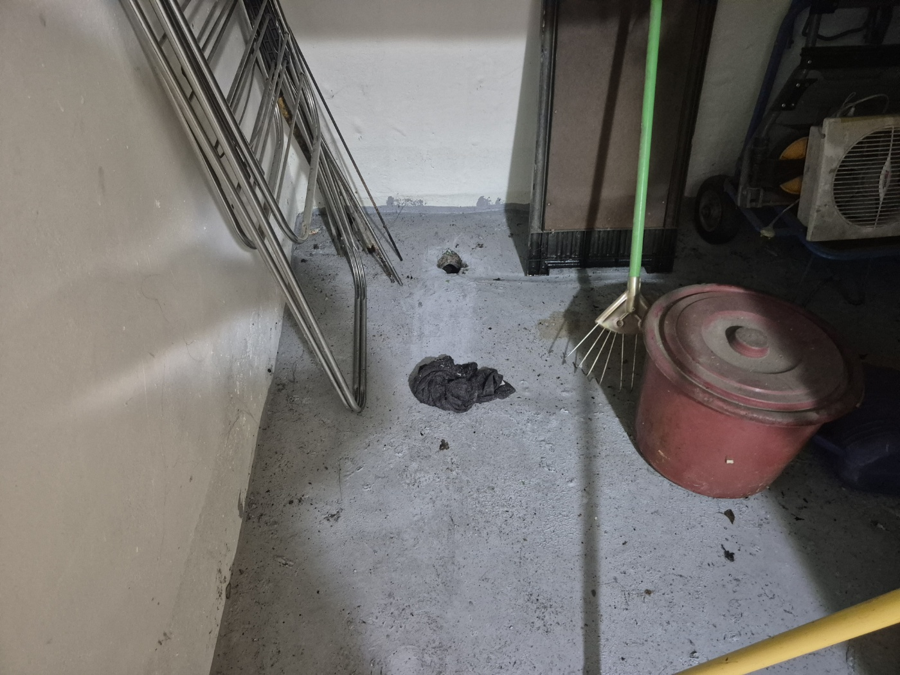
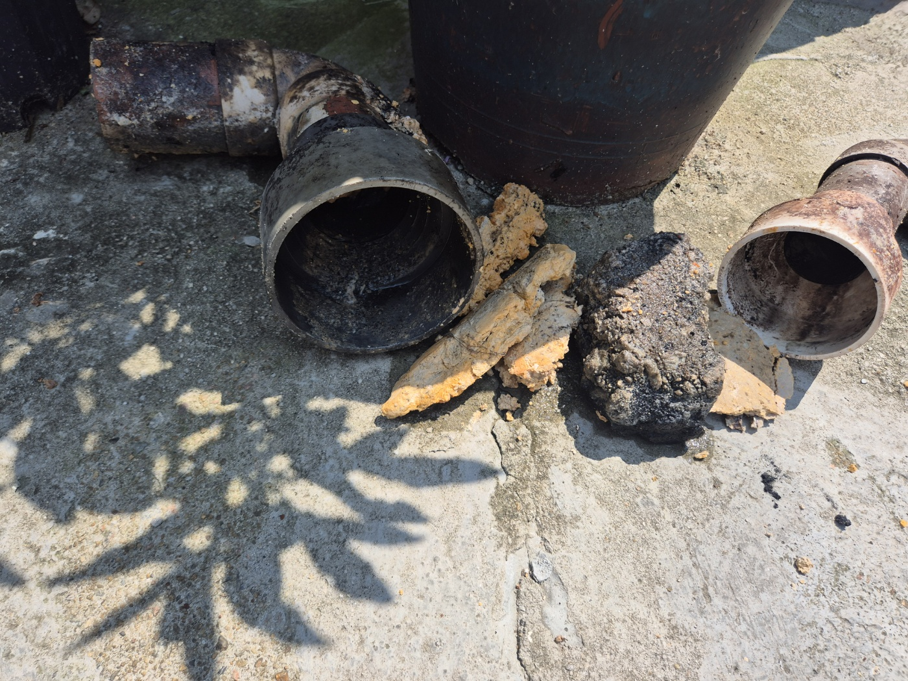
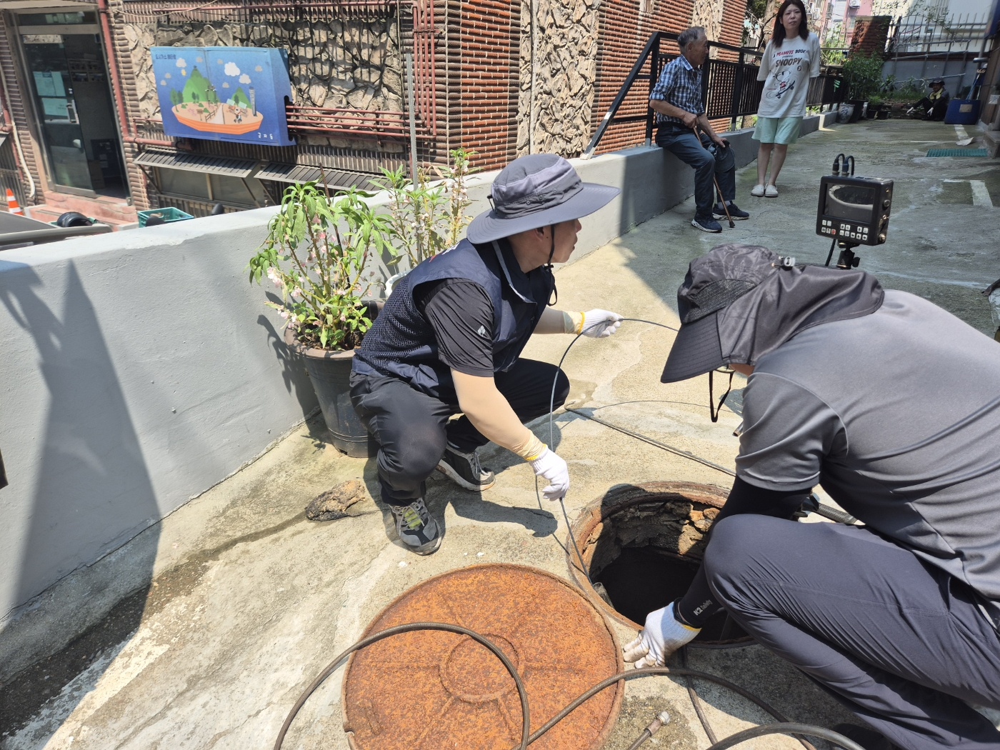
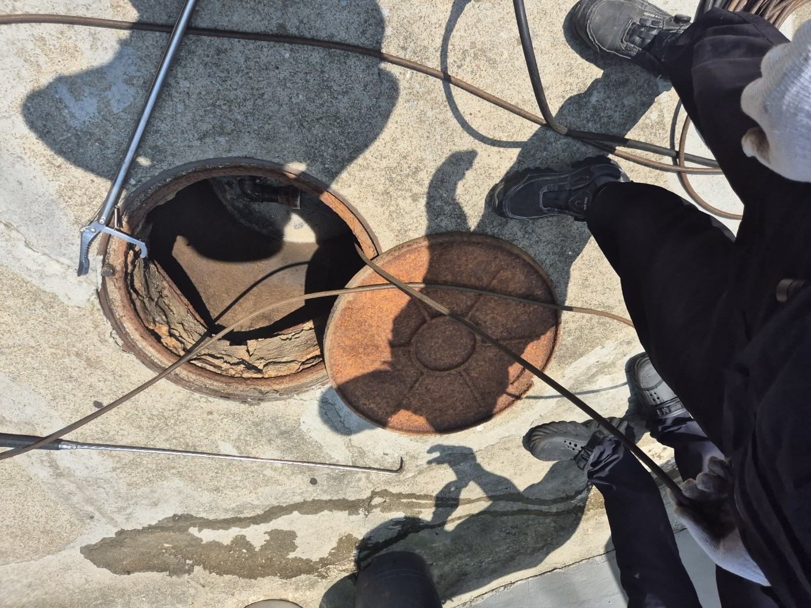
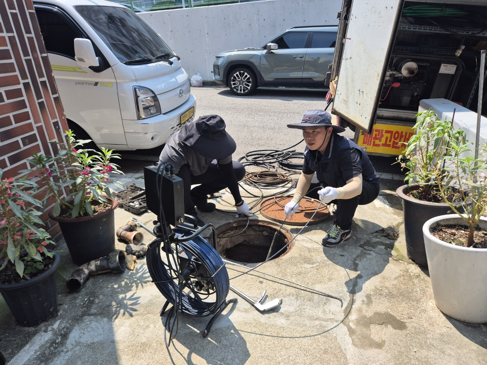
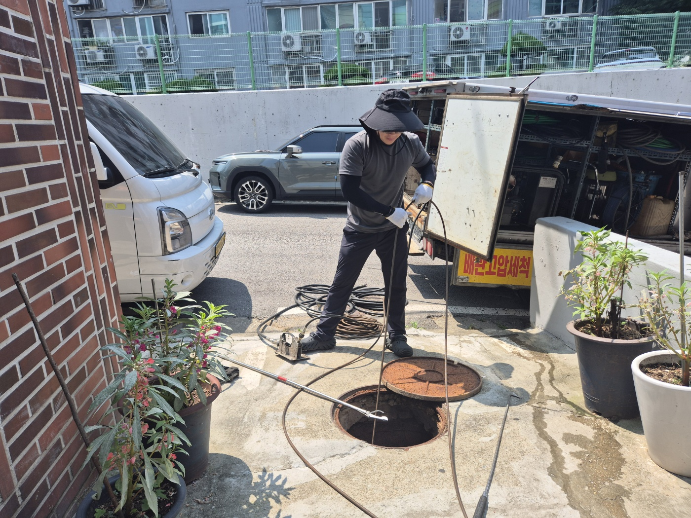
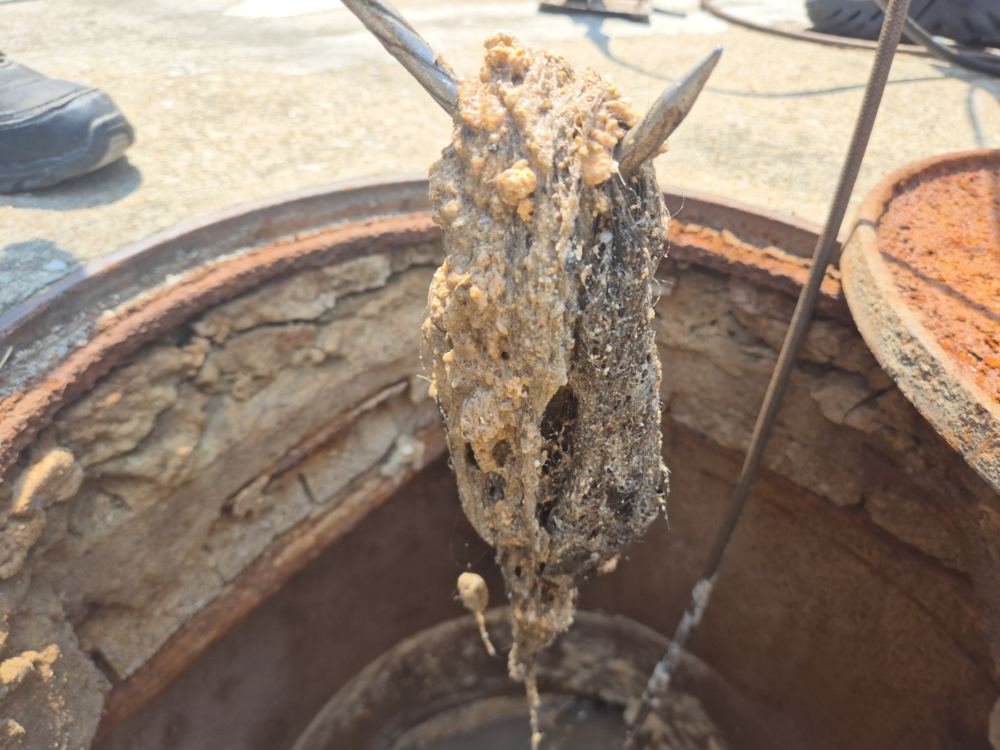
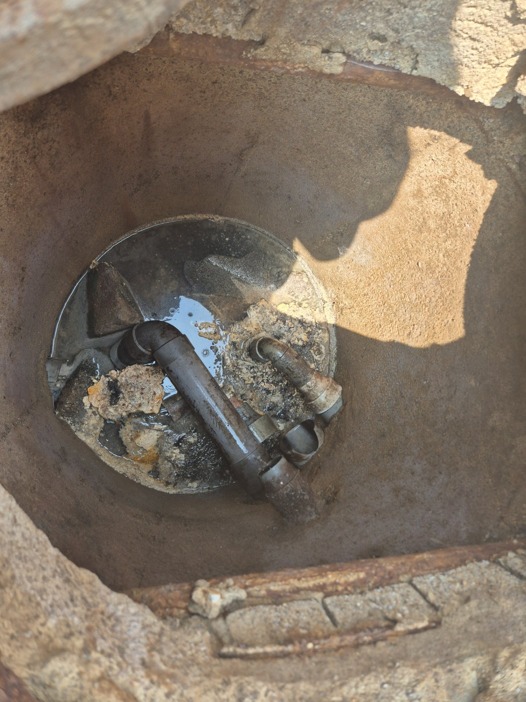

안성·평택 전 지역 하수구 막힘 및 고압세척 전문 고고고설비입니다. 이번 시공 현장은 안성시 공도읍 소재 다세대 원룸 건물로, 지하 세대 다용도실 바닥 배수구에서 지속적인 하수 역류가 발생한다는 긴급 접수를 받고 현장으로 즉시 출동했습니다.
1. 현장 도착 및 지하 세대 역류 피해 상태 진단
지하 세대 내부 다용도 공간을 진단한 결과, 바닥 배수구 주위로 검은 오수가 역류하여 광범위한 침수 흔적과 악취가 발생하고 있었습니다. 지하 세대는 건물 전체의 메인 하수관 하류에 위치하여 주배관이 폐색될 경우 상층부 세대의 물 사용량이 그대로 역류 피해로 이어지는 취약한 구조를 가집니다.

2. 노후 배관 및 이음관 내부 석회 물질 점검
건물 외부 노출 배관 및 이음 부위를 정밀 관찰했습니다. 노후된 PVC 배관 내벽에 굳어버린 누런 석회질 덩어리와 오염 물질이 두껍게 누적되어 있었으며, 연결 이음부 부식으로 인한 배관 유공 상태를 확인했습니다.

3. 옥상 입상관 점검구 내시경 정밀 탐지
건물 전체 배관 구조를 파악하기 위해 옥상 테라스에 위치한 입상 배관 점검구에서 배관 내시경 카메라 탐지를 시작했습니다. 수직관에서 수평관으로 전환되는 구간의 관로 상태와 이물질 적체 구간을 단계별로 추적 정밀 진단했습니다.


4. 지상 메인 집수정 맨홀 복합 관로 점검
옥상 측 탐지에 이어 건물 외부에 위치한 지상 메인 오·하수 집수정 맨홀을 개방하고 고압세척 특수 차량 장비를 세팅했습니다. 메인 관로 하류 지점에서 역방향으로 내시경 진입을 시도하여 주요 폐색 구간을 특정했습니다.


5. 배관 내 단단하게 고착된 유지방 응고체 인출
내시경 카메라로 특정한 막힘 지점에 특수 제거 장비를 투입하여 배관 내경을 가로막고 있던 거대한 이물질 덩어리를 1차 견인 인출했습니다. 확인 결과 오랜 시간 동안 수많은 세대에서 배출된 기름때와 생활 석회 물질이 뭉쳐 돌처럼 단단하게 응고된 유지방 슬러지 덩어리였습니다.

6. 집수정 맨홀 내부 유입구 폐색 상태 확인
맨홀 내부 유입관 구성을 점검한 결과, 장기간 축적된 기름 슬러지가 반원 형태로 단단하게 경화되어 관로 단면의 80% 이상을 막고 있었습니다. 이로 인해 상층부에서 내려오는 유량이 원활히 빠져나가지 못하고 가장 낮은 지하 세대로 역류했던 것입니다.

7. 배관 고압세척 세정 및 최종 복구 점검
고압세척 특수 노즐을 배관 내부 깊숙이 투입하여 고압 분사수로 관로 내벽의 유지방 스케일과 석회 잔존물을 말끔히 분쇄·세척했습니다. 반복적인 특수 세정 작업 후 굳어 있던 찌꺼기가 완전히 제거되면서 유량이 원활히 통수되는 것을 확인했습니다. 작업 종료 후 맨홀 내부 연결 이음 부위를 최종 정돈하며 현장을 성공적으로 복구했습니다.

8. 다세대·원룸 건물 하수관 관리 안내
원룸 및 다세대 건물의 지하 세대는 메인 하수관이 막힐 경우 가장 먼저 역류 피해를 입게 됩니다. 반복적인 역류 증상이 나타난다면 배관 단면이 기름 슬러지 등으로 좁아진 상태이므로, 배관 내시경 정밀 검사 및 고압세척 관로 준설을 통해 근본적인 원인을 제거하는 것이 안전합니다.
고고고설비는 아파트, 원룸, 상가, 공장 등 하수구 역류, 메인 배관 막힘, 고압세척 작업을 첨단 내시경 장비와 전문 공법으로 확실하게 해결해 드립니다.